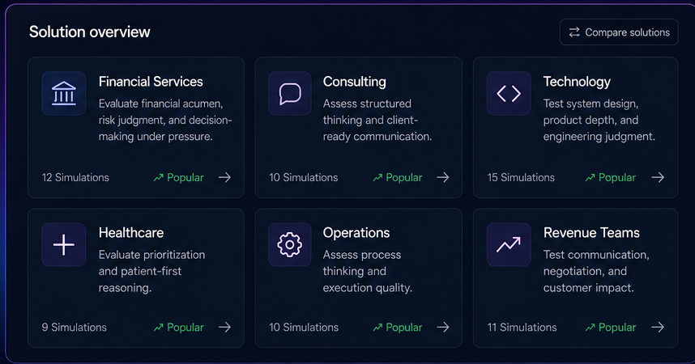

Built for every hiring stakeholder
One source of evidence that recruiters, hiring managers, and leaders can all stand behind.
One objective standard
Every candidate is measured against the same role rubric.
Less time in interviews
Surface the strongest people before the first live conversation.
Defensible decisions
Back every call with structured, auditable evidence.

One platform, every role on the panel
Each stakeholder gets the view and the evidence that matches how they make decisions.
Recruiting teams
Screen faster and surface the strongest candidates with evidence-backed insight.
View workflowHiring managers
Evaluate real-world potential, not just resumes or interview impressions.
View workflowTalent leaders
Build consistent, scalable hiring processes that improve quality of hire.
View workflowFor roles where the decision really matters
When a hire carries real weight, gut feel is not enough. fydell gives you defensible evidence.
Structured simulations
Role-specific simulations reveal how candidates think, decide, and perform in realistic scenarios.
Objective scoring
AI-powered scoring removes bias and gives consistent, explainable evaluation across every candidate.
Faster decisions
Automate evaluation and reporting so teams move quickly without compromising on quality.
Get everyone on the same evidence
Give your whole panel one defensible source of truth for every hire.